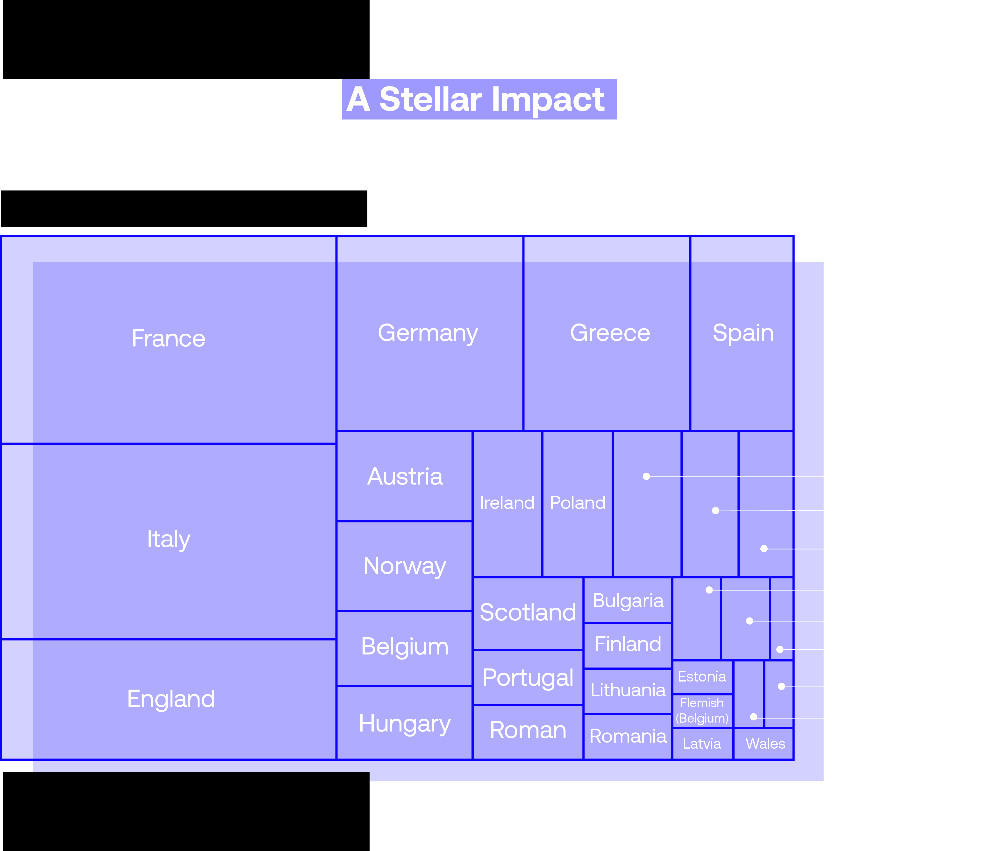

Did you know that Earth's literary and artistic giants have left their signature on Mercury?
Yes, the first planet of our solar system have craters that are named after the most prolific artists and cultural icons on Earth

Yes, the first planet of our solar system have craters that are named after the most prolific artists and cultural icons on Earth
In astronomy, Mercury is the smallest and fastest planet in our solar system, it orbits the Sun every 88 days. Slightly larger than Earth’s Moon, it is named after the swift Roman god of commerce, travel, and trickery. In astrology, it is the planet of communication, intellect, and thinking patterns.
As a rocky planet has cratered surface like the Moon. It bears scars from ancient meteoroid and comet impacts. Massive impact basins like Caloris (1,550 km wide) and Rachmaninoff (306 km wide) formed early in the solar system’s history. Long cliffs, stretching hundreds of miles and rising up to a mile high, emerged as the planet's interior cooled and contracted.
Mercury appears greyish-brown and impact craters helped scientists solve a long-standing mystery about the planet’s unusually dark surface. The MESSENGER spacecraft revealed that carbon-rich material, including an ancient graphite shell, contributed to the planet’s unusually dark appearance.
The dark planet's craters honor icons in the arts & humanities following the International Astronomical Union’s (IAU) convention. Unlike the Moon, where craters bear scientists’ names, this mighty planet celebrates creativity.
Video source NASA's MESSENGER spacecraft
All data can be found at NASA
Mercurian crater names reflects the historical centers of artistic power. Over half of the honorees hailed from Europe, reinforcing the region’s centuries-long dominance in literature, music, and the visual arts. The Renaissance, the Enlightenment, and the Romantic period all originated in Europe, shaping the creative legacy for generations.
However, the individual country with the highest number of honorees is the United States. This pattern highlights the shifting centers of artistic and cultural influence. The 19th and 20th centuries saw America emerge as a global powerhouse in literature, music, and film, cementing its place in cultural history. Figures like Walt Whitman, Edgar Allan Poe, and Duke Ellington exemplify this shift, representing the artistic innovations that placed the United States at the forefront of creative expression in modern times.

All data can be found at NASA
While Europe and the U.S. dominate the list, Mercury’s craters also recognize artists and writers from regions that have historically been underrepresented in global artistic narratives. Names like Rabindranath Tagore (India), Olaudah Equiano (Benin), and Enheduanna (Sumerian poet) show that artistic influence extends far beyond Western borders. As more names are added in the future, there is hope for an even more diverse representation of global artistic excellence.
All data can be found at NASA
Europe, rich in history and culture, expectedly lead in the race of having the highest number of creative influential icons on the list of Mercury craters’ names. Some notable figures include Johann Sebastian Bach (1685–1750), Ludwig van Beethoven (1770–1827) and Pablo Picasso (1881–1973). These are the common names amongst art museums and concert halls around the world. However, beyond these well-known luminaries, there are many lesser-known figures whose contributions have been instrumental in shaping Europe's artistic triumphs.
Sofonisba Anguissola (1532–1625) was an Italian Renaissance Painter. She was famous for works such as 'The Chess Game', 'Self-Portrait at the Easel'. Throughout her life, she was one of the first recognized female painters in the Renaissance, and became a court painter for Philip II of Spain. Unlike many female artists of her time, she was not the daughter of a painter but was trained in a household where her father supported her painting pursuit.
Snorri Sturluson (1179–1241) was an Icelandic historian and poet, renowned for his works 'Prose Edda' and 'Heimskringla'. He played a crucial role in preserving Norse mythology and Viking history through his writings, including legendary gods such as Odin and Thor. His works are enormous inspirations for modern interpretations of Norse legends in literature, art, and popular culture.
Rachel Ruysch (1664–1750) was a Dutch Baroque painter celebrated for her exquisite floral still-life compositions. A master of the genre, she gained international recognition and served as a court painter in Düsseldorf, Germany. Her meticulous attention to detail and ability to capture the delicate beauty of flowers set her apart in the art world. Notably, Ruysch was one of the first female artists to achieve financial independence through her work, breaking barriers in a male-dominated field and securing a lasting legacy in European art history.

All data can be found at NASA
Asia represents a diverse range of cultural, historical, and literary talents, spanning across poetry, literature, art, philosophy, and music. Many figures such as Rabindranath Tagore, Du Fu, and Rumi, are globally recognized for their writings and philosophical contributions.
Others, like José Rizal from the Philippines and Raden Saleh from Indonesia, played pivotal roles not only in the arts, but also in political movements within their countries.
Among the most culturally diverse figures is Amrita Sher-Gil (1913 - 1941), she was a painter of Sikh and European descent, renowned for blending Western and Indian artistic traditions. Sher-Gil has been called "one of the greatest avant-garde women artists of the early 20th century" and a pioneer in modern Indian art.
José Rizal (1861-1896) was a Filipino polymath, novelist, and revolutionary who fought against Spanish colonial rule and became a national hero.
Kahlil Gibran (1883-1931) was a Lebanese-American poet, artist, and writer whose work, particularly 'The Prophet', harmonizes Eastern mysticism with Western philosophy, making him a deeply influential cross-cultural figure
All data can be found at NASA
The number of figures from Africa represent a group of influential icons spanning from literature, philosophy, science to art, music, and activism. Many of these individuals made profound cross-cultural impacts, whether by engaging with European intellectual traditions, resisting colonial influence, or shaping artistic and literary movements in their own regions.
Figures like Olaudah Equiano and Africanus Horton played key roles in the fight against slavery, African self-determination, and early Pan-African thoughts. Others, such as Umm Kulthum, remain deeply admired in global music and writers like Nadine Gordimer used literature as a powerful tool for political and human rights activism.
Olaudah Equiano, a Nigerian-born writer, abolitionist, and a former enslaved person, played a crucial role in the British abolition movement, publishing a highly influential autobiography about the transatlantic slave trade.
Nadine Gordimer, a South African writer of Jewish descent, was one of the leading literary voices against apartheid, using her work to advocate for political change and earning a Nobel Prize in Literature in 1991.
In music, Umm Kulthum was an Egyptian singer, songwriter, and actress, captivated audiences across the Arab world and beyond, influencing musicians as diverse as Bob Dylan and Maria Callas.

All data can be found at NASA
North America's artistic disciplines are vast, spanning from painters, sculptors, writers, composers, photographers to architects, choreographers, and musicians, showcasing the breadth of creative impacts.
Additionally, several figures, such as Audre Lorde, Maya Angelou, and Nampeyo, represent historically underrepresented voices, including women, indigenous peoples, and Black artists whose contributions were often overlooked. Many American figures also crossed disciplinary boundaries, with individuals like Walt Disney in animation, Jack Kirby in comics, and Richard Buckminster Fuller in architecture influencing multiple creative spheres and the pop culture we live in today.
Walt Whitman, whose free verse poetry revolutionized modern literature; Edgar Allan Poe, who pioneered the gothic horror and detective fiction genres; and Toni Morrison, whose works reshaped the literary canon by centering Black identity and history.
Duke Ellington transformed jazz into a sophisticated art form, while Maya Angelou’s writing and activism made her a defining voice in discussions on race and feminism.
Richard Buckminster Fuller’s innovations in sustainable architecture redefined modern design, and Scott Joplin, known as the "King of Ragtime," laid the foundation for jazz.
Augusta Savage, a key figure in the Harlem Renaissance, not only created powerful sculptures but also mentored future Black artists, advocating for greater representation in the arts.
Collectively, these figures left an indelible mark on their respective fields, influencing generations to come.
All data can be found at NASA
Many literary and artistic Latin American figures have made significant contributions to literature, music, art, and education, shaping the cultural and intellectual foundations of their countries. Many of them played pioneering roles in defining national identities, blending local traditions with global influences.
Among them, Gabriela Mistral, a Nobel Prize-winning poet from Chile, was not only a literary icon but also a passionate advocate for education and social reform, leaving a lasting impact on Latin American intellectual history.
Heitor Villa-Lobos, one of Brazil’s greatest composers, revolutionized classical music by infusing it with the rhythms and melodies of Brazilian folk traditions, creating a uniquely national sound that influenced global classical music.
Tarsila do Amaral, a leading figure in Brazilian modernism, helped establish a distinct artistic identity through the Anthropophagic Movement, merging European avant-garde techniques with local culture and folklore.
These figures stand out for their ability to bridge art, culture, and national identity, leaving a legacy in Latin American heritage.

All data can be found at NASA
From the continent of Oceania, there were only six people being featured. However, their contributions to the arts in the world is nothing small, pioneering new styles and gaining international recognition.
A common thread among them is their role in breaking artistic conventions and bringing attention to Australian and New Zealand cultural identities on a global scale.
Clarice Beckett, an Australian tonalism pioneer, was largely unrecognized in her lifetime but is now celebrated for her evocative, atmospheric landscapes.
Frances Hodgkins, one of New Zealand’s most famous modernist painters, gained prominence in Europe for her unique blend of impressionism and abstraction.
Percy Grainger, a radical and unconventional composer, was a key figure in the folk music revival, adapting traditional English and Scandinavian melodies into classical compositions.
Frank Hurley, a legendary photographer and war documentarian, is renowned for his breathtaking images of Antarctic exploration, including Ernest Shackleton’s expedition, as well as his dramatic World War I battlefield photography.
Albert Namatjira, a groundbreaking indigenous Australian artist, broke racial barriers in the art world and became the first Aboriginal person to gain full Australian citizenship. His stunning watercolor landscapes of the central Australian desert brought Aboriginal art into mainstream recognition.
For every woman honored with a crater name, five men received the same recognition.
This stark gender disparity reflects a long history of exclusion in the arts, where societal norms and institutional barriers have, for centuries, restricted women’s access to artistic education, publishing opportunities, and prestigious commissions.
However, there has been a gradual shift in recent years. More women have been added to Mercury’s surface, with literary and artistic figures such as Maya Angelou, Artemisia Gentileschi, and Audre Lorde are now among those honored. These newer additions mark a growing acknowledgment of women’s influence in artistic and literary history. Yet, they remain vastly outnumbered, highlighting the ongoing need for greater representation.
Become a Poet or a Painter
Among the various disciplines honored on Mercury, poets stand out as the most represented group. More craters are named after poets than after painters, sculptors, or composers. One reason for poetry’s dominance may be its role as a foundational art form. Before widespread literacy, poetry was the primary vehicle for storytelling, history, and cultural preservation. Notable poets such as Homer and Virgil shaped civilizations through their words. Even in later centuries, poetry remained one of the most accessible forms of artistic expression, requiring no materials, beyond the concise language itself.
The act of naming craters of Mercury formed a unique archive that preserves artistic and literary legacies. Not in books, galleries, or concert halls, but in the very fabric of another world. The patterns of naming reveal much about history: the gender inequalities that shaped artistic recognition, the power of poetry, and the shifting cultural centers of influence.
As space exploration continues, more features across the solar system will be named. Perhaps future celestial bodies will honor a broader spectrum of artists, and creators from historically marginalized backgrounds. Until then, Mercury remains a testament to human creativity and existence.
~